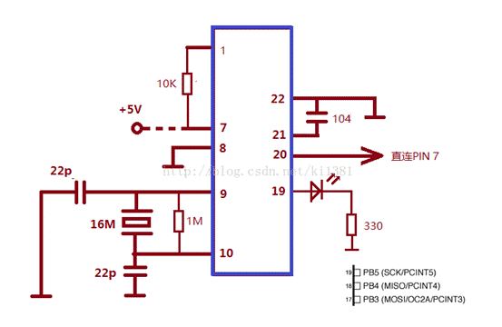

3.2节电处理部分
（尚未修订整理）
我们从硬件和软件部分入手，进行相应的节电处理，从而实现能源节约。
3.2.1硬件部分
3.2.1.1构建ATmega328p最简系统达到控制模块最大节电化

在验证实验过程中我们使用的是Arduino uno开发板，开发板上的串口等非控制模块必须部分在实际应用中会带来不必要的电力浪费，而我们可以利用开发板上的微控制器ATmega328p构建其最小系统，摒弃无用元器件从而达到控制核心最大节电化。
上图即为ATmega328p的最小系统电路图，其由电容、晶振、电阻和微控制器组成，不仅能节省模块占用的空间，还能避免无用元件的耗电。
3.2.1.2使用LoRa无线传输模块达到信号低功耗收发
LoRa是semtech公司创建的低功耗局域网无线标准，低功耗一般很难覆盖远距离，远距离一般功耗高，要想马儿不吃草还要跑得远，好像难以办到。LoRa的名字就是远距离无线电（Long Range Radio），它最大特点就是在同样的功耗条件下比其他无线方式传播的距离更远，实现了低功耗和远距离的统一，它在同样的功耗下比传统的无线射频通信距离扩大3-5倍。在感应模块与控制模块之间的通讯仅为简单的按需唤醒的情况下，LoRa能够以极低功耗工作，在省去了布线的繁琐的情况下也能充分节省电量。
3.2.2软件部分
3.2.2.1利用Enerlib库使控制模块按需唤醒
Arduino像电脑和手机一样，也具备睡眠∕休眠∕待机功能。在睡眠状态下，系统几乎完全停止运作，只保留基本的侦测功能，因此只消耗少许电力。以电脑为例，在睡眠状态下，可被键盘按键或者网络信息唤醒。Enerlib类库提供了一个只能在中断服务程序中使用的WasSleeping()函数，以判定系统目前的“睡眠/醒着” 的状态，该程序执行一次睡眠，然后随机唤醒后不能再次进入睡眠状态。但如果将睡眠指令直接置于中断服务程序当中，当睡眠指令发出后，执行中断服务程序进入睡眠;当唤醒指令发出后，只要进入了中断服务程序即可唤醒。这样就能够实现Arduino的按需唤醒。并且我们加入一个看门狗计时器，在程序陷入死循环的时候，让单片机复位而不用整个系统断电，从而保护你的硬件电路，保证整个系统能够有效触发。
3.2.2.2控制LoRa模块的工作模式达到无线收发的按需唤醒
因为控制模块上的LoRa模块不需要一直接收来自人体感应模块的判断人有无的数据，而是需要在无人的情况下唤醒水阀控制模块令其开始工作。所以我们让控制模块的LoRa模块处于省电模式，在这个状态下串口接收关闭，无线处于空中唤醒模式，收到无线数据后，打开串口发出数据，进而唤醒整个控制模块的运作。